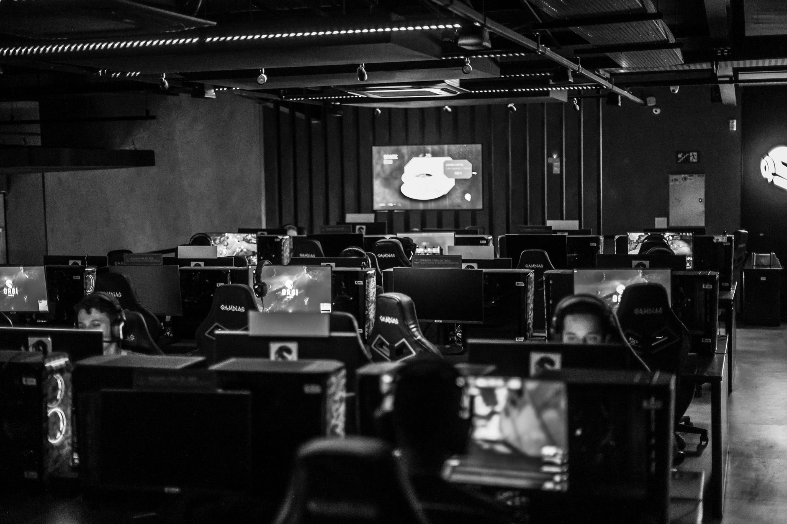

A bold move for NAVI
In a move that has caught many analysts by surprise, Natus Vincere (NAVI) has confirmed their participation in the HyperX Retake Season 13. This decision comes at a critical juncture in the competitive Counter-Strike calendar, where many top-tier teams are carefully managing their rosters and fatigue levels. By committing to this tournament, NAVI is signaling a deep desire to maintain high-level competitive rhythm, regardless of the logistical hurdles ahead.
The HyperX Retake series has become a prestigious platform for showcasing tactical prowess and individual skill. For a team of NAVI's caliber, participating in such an event is not just about the prize pool; it is about maintaining dominance and staying sharp against evolving meta-strategies. Fans are eager to see how the organization balances this commitment with their existing obligations.
Navigating a crowded tournament schedule
The primary concern surrounding NAVI's registration is the significant overlap with other major international events. The esports calendar is notoriously unforgiving, and this season is no exception. Specifically, the team faces potential conflicts with two massive tournaments that demand peak performance and physical presence.
Managing these three events simultaneously will require extraordinary coordination from the NAVI coaching staff and player management. The risk of burnout is high, and the physical toll of traveling between Bucharest and Beijing while competing in online or hybrid formats like the Retake season cannot be understated. However, the organization seems determined to push through the logistical chaos.
Strategic implications for the roster
How will this affect the actual gameplay of the NAVI squad? Analysts suggest that this heavy schedule might force the team to experiment with their lineup or utilize a more rotating system to ensure players remain fresh. While the core roster is incredibly strong, the sheer volume of matches could lead to tactical exhaustion if not managed with precision.
Competing at this level requires more than just skill; it requires a level of mental fortitude that most teams simply cannot sustain over such a packed schedule.
If NAVI succeeds in navigating this period, it will set a new standard for how professional organizations handle multi-tournament commitments. Success in the HyperX Retake Season 13 could provide the momentum needed to carry them through the grueling PGL and IEM stages, potentially cementing their status as the most resilient team in the world.
What fans can expect from the competition
For the spectators, this means more high-quality Counter-Strike action than ever before. The HyperX Retake format offers a unique viewing experience that differs from traditional tournament structures, providing a concentrated look at player mechanics and quick decision-making. Watching NAVI navigate these unique scenarios will be a highlight of the season.
Expectations are sky-high. Fans aren't just looking for a win; they are looking for the clinical, disciplined gameplay that has become the hallmark of the NAVI brand. Whether they are playing in the heat of Bucharest or the intense atmosphere of Beijing, the eyes of the community will be on how they handle the pressure of the Retake season.
Looking ahead at the esports landscape
As we move deeper into the competitive season, the movement of top players and the stability of rosters will continue to define the hierarchy of professional gaming. Organizations are constantly making moves to secure their future, whether through new tournament entries or long-term player commitments. We have already seen significant stability in other parts of the scene, such as when Magnojez Extends Contract with BETBOOM Team, showing that long-term planning is the current trend among elite clubs.
The decision by NAVI to sign up for HyperX Retake Season 13 is a testament to the fast-paced nature of modern esports. As teams continue to balance massive international events with specialized competitive series, the gap between the elite and the rest of the field will likely continue to widen based on organizational strength and scheduling intelligence.
See Also
If you enjoyed this Esports News article, check out Magnojez Extends Contract with BETBOOM Team for more useful reading.